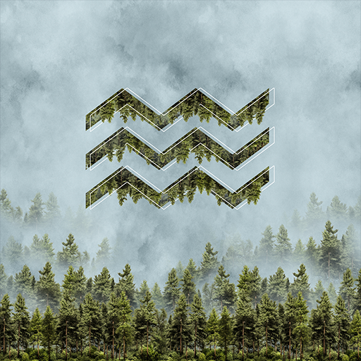
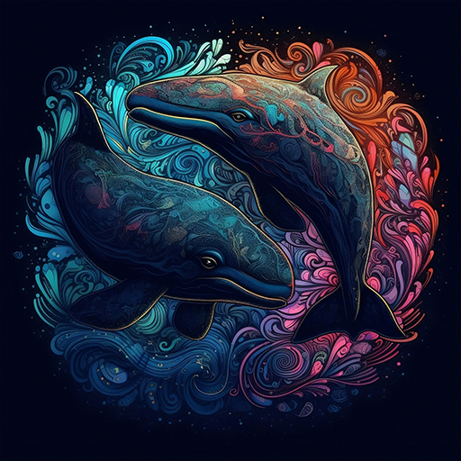
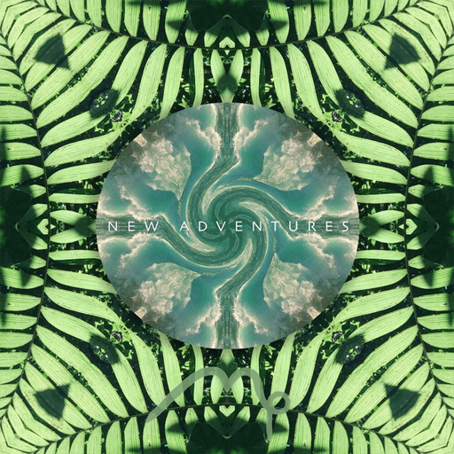
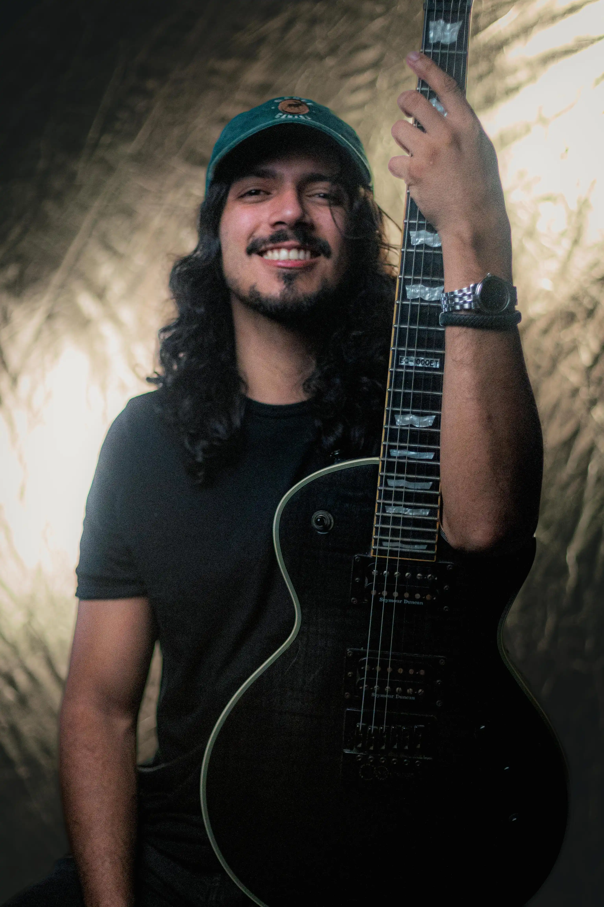
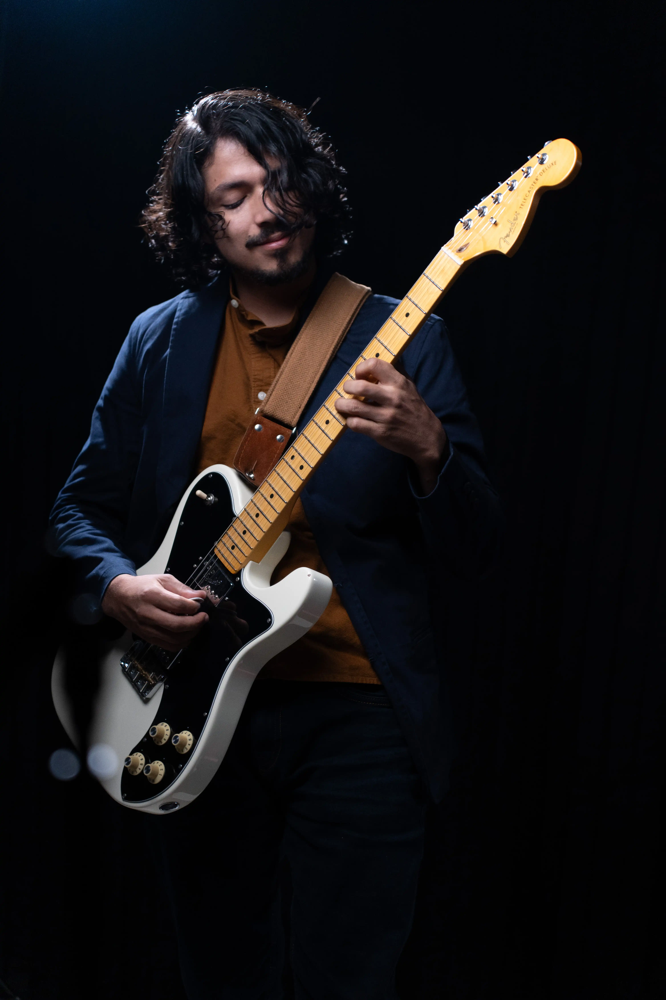
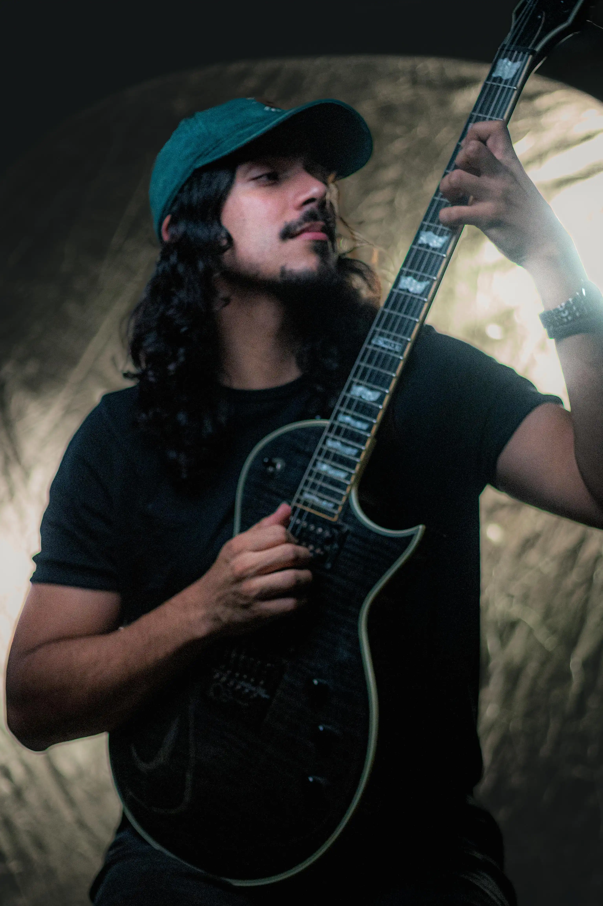
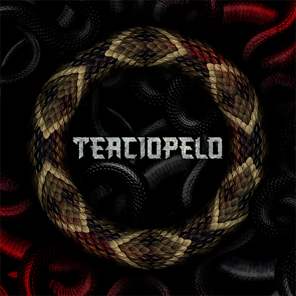

Ecos de Anochecer
Un recorrido por la soledad, el caos y el misticismo bajo la idea de que nada ocurre por azar. Ilustrado con dibujos en papel del propio autor. Segunda entrega actualmente en preproducción.
ESCUCHARCompositor, guitarrista e ingeniero de sonido. Música instrumental escrita para ensambles actuales, donde la guitarra eléctrica articula estructuras progresivas, atmósferas sobrias y pulsos contemporáneos.
Un recorrido por la soledad, el caos y el misticismo bajo la idea de que nada ocurre por azar. Ilustrado con dibujos en papel del propio autor. Segunda entrega actualmente en preproducción.
ESCUCHAR
En colaboración con José D. Porras. Una pieza de precisión rítmica y carácter directo nominada a Mejor Sencillo Rock Progresivo en los Premios ACAM 2025.
ESCUCHAR
Introspección, nostalgia y resiliencia narradas desde la metáfora de una ballena varada en la costa, representada gráficamente por dos cetáceos en equilibrio dual.
ESCUCHAR
Euforia y coraje al cerrar una etapa universitaria para zarpar hacia lo desconocido. Representado por un vórtice de fotografía natural; nominado a Mejor Disco Instrumental (ACAM).
ESCUCHARCompositor y guitarrista de San Ramón de Alajuela, Costa Rica. Con un trasfondo marcado por las ciencias exactas, la biología y el estudio autodidacta de la guitarra eléctrica desde los 14 años, aborda la música desde una mirada analítica y honesta.
Tras dejar la ingeniería eléctrica en la UCR para dedicarse de lleno a su proyecto, debutó en 2022 con New Adventures y consolidó su evolución hacia un lenguaje más introspectivo con el EP Entre Mareas (2024) y el LP Ecos de Anochecer (2025).
Shows eléctricos respaldados por visuales ligados a la naturaleza y cada álbum. Adaptable de dúo y trío a banda completa con metales.
Estética sobria y sin adornos. Cada lanzamiento integra fotografía orgánica, simbolismo o ilustraciones dibujadas a mano.
Nominado por ZIGZAG (colab. José D. Porras)
Nominado por Caos y Luz (colab. Chanti)
Nominado por Galería 1930 (En Vivo)
Nominado por New Adventures



Marco percibe la música de manera auténtica y acompaña cada lanzamiento con visuales cuidadosamente planeados para cada portada, creando una experiencia inmersiva... me llevó a su mundo musical e instrumental y me hizo ver el poder del rock progresivo como herramienta de narrativa y autodescubrimiento.
Rock progresivo con cantos de ballenas... una obra conceptual que explora la resiliencia.
Un prodigio compositor costarricense con una manera singular de hacer prog.
El trabajo en directo de este excelente compositor costarricense del progresivo.

Banda de rock alternativo y progresivo donde Marco es compositor y guitarrista líder. Tras el EP Renacer (2025), nominado a Mejor Álbum Rock Progresivo en Premios ACAM, el grupo graba actualmente su próximo disco.
Producción musical, grabación especializada de guitarras eléctricas, mezcla y masterización para artistas y proyectos independientes.